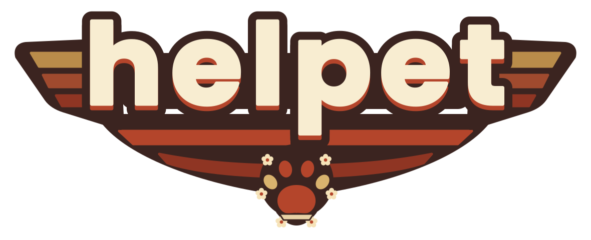

Perfil y ficha médica

Mascota feliz y amada 🐾

Esta placa aún no tiene una mascota asignada.
Registrar esta placa
Mascota feliz y amada 🐾
Si está contigo mientras vuelve a casa, ten esto en cuenta:
ID:
Ingresa tus 4 dígitos para editar.
Ayúdanos a que vuelva a casa
¡Se ofrece recompensa!
Agradecemos cualquier información. Llama o escribe a:
---🔒 Por privacidad, diagnósticos y recetas solo los ve el dueño.